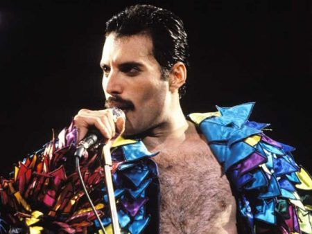
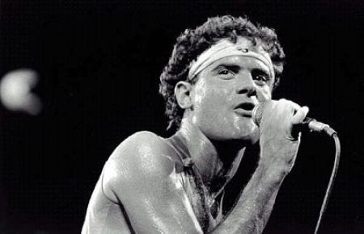
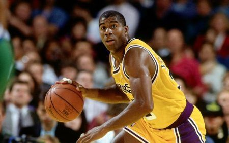

Celebridades que convivem/conviveram com o vírus
A cantora austríaca Conchita Wurst surpreendeu seus fãs ao revelar na noite do último domingo, 15, ser portadora do vírus HIV. Em uma publicação no Instagram, a artista disse estar sendo chantageada por um ex-parceiro e, por isso, resolveu ela mesma tornar pública sua condição sorológica.
Assim como Conchita, muitos outros artistas já assumiram publicamente serem portadores do agente causador da Aids, seja por livre espontânea vontade, por chantagens ou no leito de morte.
Jerry Herman
Notável compositor da Broadway, responsável pelas trilhas de “Olá, Dolly!” e “Gaiola das Loucas”, descobriu portar HIV em 1984, no auge da epidemia. Atualmente com 86 anos, ele continua muito vivo e com tratamento em dia.
Freddie Mercury
Um dos símbolos da luta contra a doença no século XX, Freddie Mercury anunciou ao mundo publicamente sua sorologia em 1991 em decorrência de complicações em seu quadro de saúde ocasionados pela infecção.
Andy Bell
Membro da dupla pop Erasure, revelou ser HIV positivo em 2004, seis anos depois do diagnóstico.
Cazuza
Assim como o líder do Queen, Cazuza também se tornou uma marca da epidemia no Brasil após ter sido diagnosticado com o vírus em 1986, vindo a óbito quatro anos depois, em 1990. O músico, entretanto, só assumiu sua sorologia em 1989.
Greg Louganis
Mergulhador campeão de medalhas de ouro nos Jogos Olímpicos de 1984 e 1988, tornou pública sua condição em 1995. Atualmente, com 58 anos, se tornou ativista dos direitos LGBTs e dos portadores do vírus causador da Aids.
Renato Russo
Outro notável brasileiro que morreu em decorrência da Aids foi Renato Russo. O líder do Legião Urbana descobriu que era soropositivo em 1989, mas nunca assumiu publicamente a doença.
Charlie Sheen
Em 2015, o humorista Charlie Sheen revelou em um programa de TV norte-americano ser HIV positivo após chantagens e ameaça de extorsão financeira.
Magic Johnson
Lendário jogador de basquete da liga profissional norte-americana (NBA), contou ser portador do vírus da imunodeficiência adquirida em 1991 e, desde então, tem sido um dos mais ferrenhos militantes da causa. Atualmente, com 58 anos, ele continua vivo e esbanjando uma saúde invejável.
